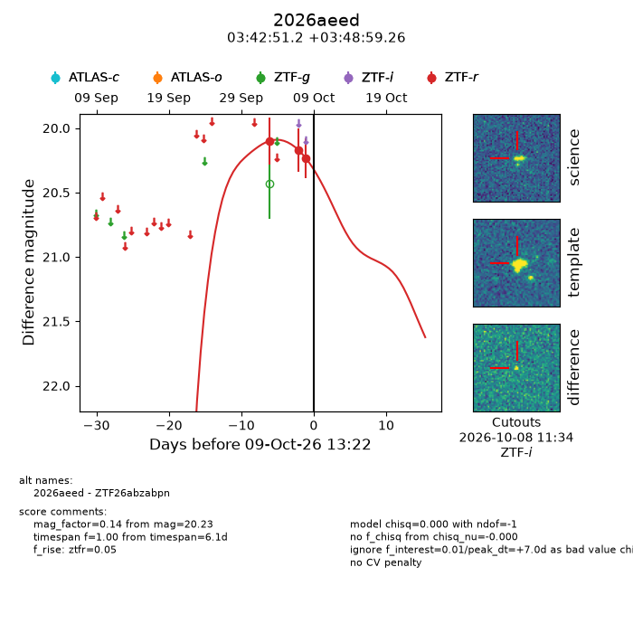
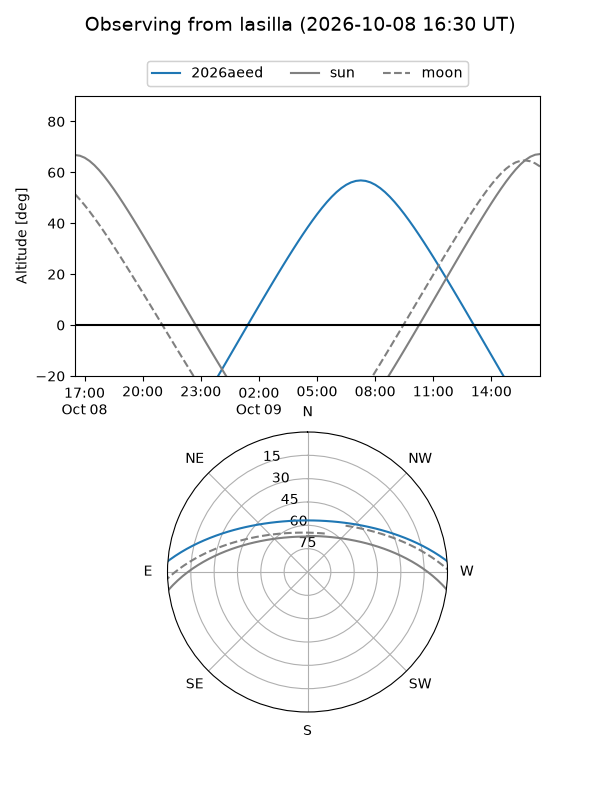
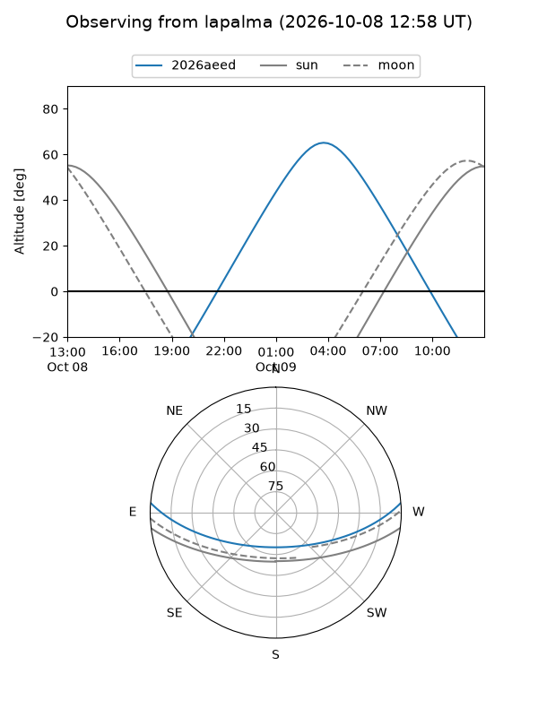
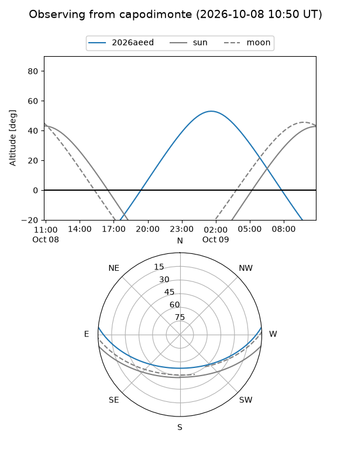
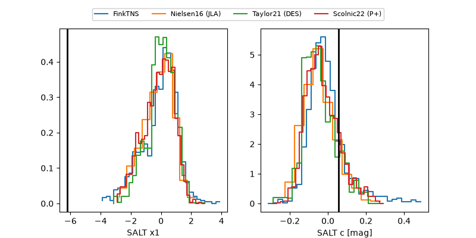

2026aeed
Target 2026aeed at 2026-10-09 13:25
Aliases and brokers:
FINK-ZTF: ztf.fink-portal.org/ZTF26abzabpn
Lasair-ZTF: lasair-ztf.lsst.ac.uk/objects/ZTF26abzabpn
ALeRCE-ZTF: alerce.online/object/ZTF26abzabpn
YSE-PZ: ziggy.ucolick.org/yse/transient_detail/2026aeed
TNS name: wis-tns.org/object/2026aeed
Direct TNS query: direct search
alt names
ZTF26abzabpn (ztf,fink_ztf)
2026aeed (tns,yse)
Coordinates:
equatorial (ra, dec) = 55.7135,+3.81646
equatorial (HMS+DMS) = 03:42:51.24,+03:48:59.26
galactic (l, b) = (182.8706,-38.36310)
Flags:
peak dt: +7.0
Photometry:
last ztfr=20.23
3 ztfr detections
Lightcurve

Visibility



Additional plots
